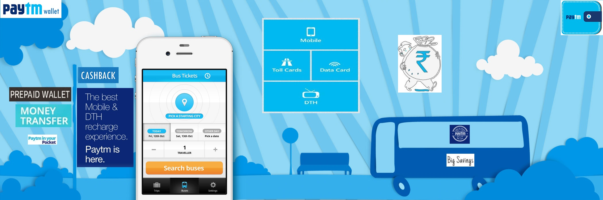

A digital wallet refers to an electronic device that allows an individual to make electronic transactions. This can include purchasing items on-line with a computer or using a smartphone to purchase something at a store. An individual's bank account can also be linked to the digital wallet. They might also have their driver’s license, health card, loyalty card(s) and other ID documents stored on the phone. The credentials can be passed to a merchant’s terminal wirelessly via near field communication (NFC). Increasingly, digital wallets are being made not just for basic financial transactions but to also authenticate the holder's credentials. How to get it:
How to get started:
Logging into Facebook or Gmail
Create a separate account for the app
Add money to your wallet
Debit/credit card or net banking
What all can you do using a mobile wallet:

Payment for DTH, data card recharge, broadband and landline bills
Recharge metro cards in Delhi and Mumbai
Electricity bills, water and gas bills can be paid through mobile wallets
Cab services like Uber, Meru and Taxiforsure accept Paytm money
Virtual E-payment Gateway:
No PoS machine required
QR code used for payment to bank account of merchant
Complete privacy of merchant bank account
Must Do Practices:
Register your mobile number at bank for regular information by SMS for every transaction